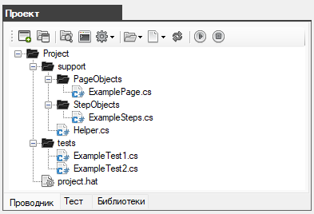
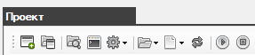
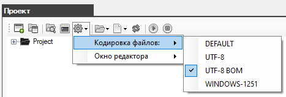
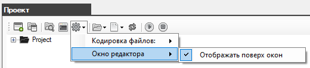
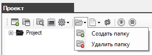
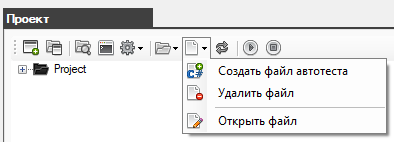
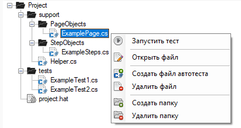

Окно Проекта - вкладка Проводник
Основное окно для работы с проектом.

Панель инструментов содержит следующие кнопки:

- Создать проект - создает новый проект автотестов
- Открыть проект - открывает ранее созданный проект автотестов
- Проводник - открывает папку проекта в проводнике Windows
- Сформировать команду запуска - открывает окно с уже сформированной командой запуска автотестя для командной строки Windows (cmd)
- Настройки - меню настроек для работы с проектом
- Папки - меню по работе с папками
- Файлы - меню по работе с файлами
- Обновить - обновление информации в дереве папок и файлов
- Запустить тест - запускает выбранный автотест
- Остановить тест - останавливает запущенный автотест
Меню настроек
- Выбор кодировки для файлов проекта

- Выбор способа отображения окна редактора

Меню папок дает возможность создавать и удалять папки

Меню файлов дает возможность создавать новые файлы автотестов, открывать и удалять существующие файлы

Дерево папок и файлов проекта

Created with the Personal Edition of HelpNDoc: Produce online help for Qt applications